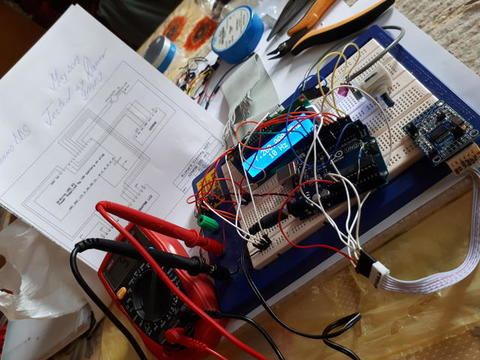
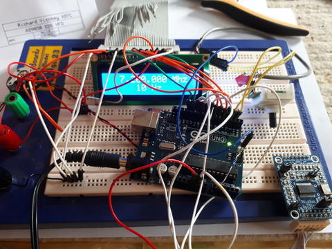
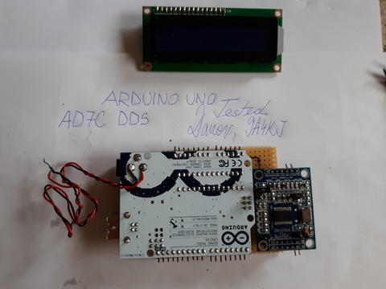
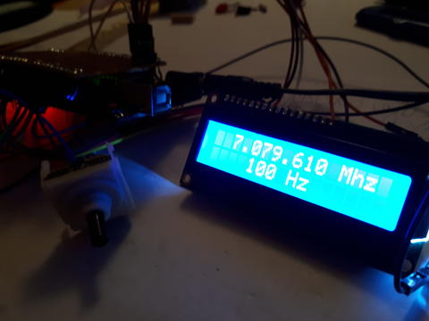
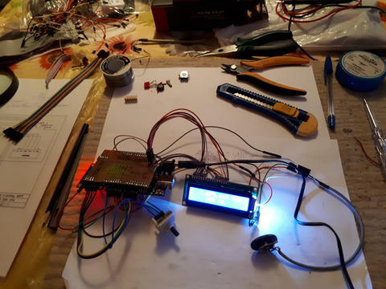
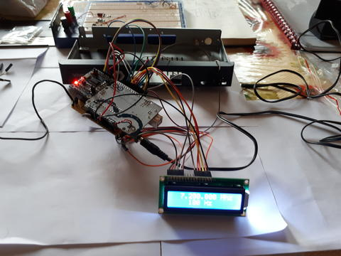
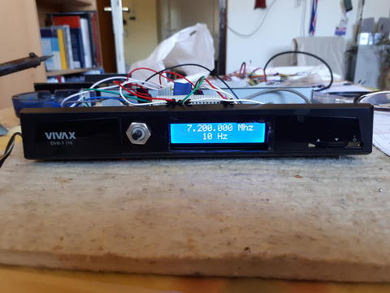
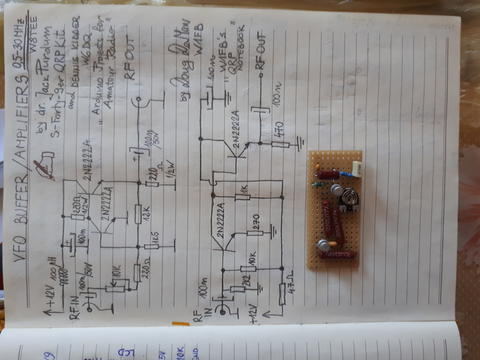

Arduino UNO DDS VFO











Arduino UNO DDS VFO project made from Richard Visokey AD7C
Arduino nano Keyer


Arduino nano- Keyer Project of Oscar DJ0MY made with some little difference ( two opto couplers are 4N27 ) tested on N1MM and Win-Test very stable